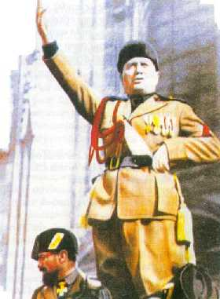

Friday, January the 4th, 2013
back to: title, date or indexes
Tiny Enid's diary for this day in 1934.
Milk slops for breakfast, washed down with gin. Read a fascinating article in The Ipsy Dipsy Doo about Mussolini, Il Duce in faraway Italy. Having thoroughly digested it I decided to set off for the railway station to make the trains run on time. This is precisely the sort of activity a plucky tot such as myself ought to be engaged in.
On my way to the station I encountered a tearaway pulling the wings off flies. I kicked his head in and then made him glue the wings back on using a glue composed of his own blood, spittle, and bone marrow. Then I made him swear a solemn vow to be an upstanding citizen for the rest of his natural life. It is a shame such ne'er-do-wells can no longer be transported to Botany Bay.
Thinking of Botany Bay made me think of botany, so I paused by the railway embankment to pick some peonies and marigolds. Because of my deeds of derring-do and penchant for violence people often forget that I am just a simple little girly and take great pleasure in my flower press. Sometimes I fancy I hear the flowers shrieking as I press every last smidgen of life out of them.
At the railway station, the dithering old station master, Mr Cribbins, was faffing about with flags and hooters. Needless to say he cannot make the trains run on time. I lured him to some sidings by pretending my little dolly was trapped in the rails, then buried him up to his neck in coarse sand. I read him the riot act, or at least a version of it improvised by Il Duce, translated into English by my mysterious mentor. Back on the platform, I took up Mr Cribbins' flag and hooter and deployed them in such a manner that I struck fear into the hearts of train drivers throughout the land. It was a good morning's work.
Later I cut this picture out of a magazine:

Hooting Yard on the Air, January the 10th, 2013 : “Dobson's Diary 1.1.53” (starts around 10:43)